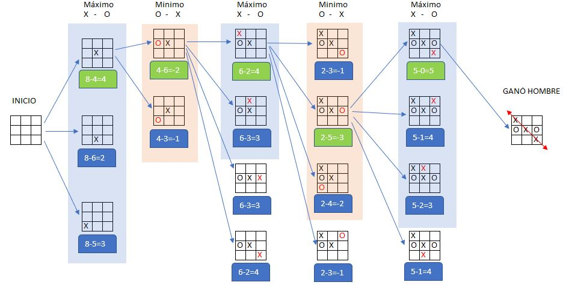

El juego de Tic-Tac-Toe, conocido como Michi, es un clásico de estrategias sencillas pero profundas. En este informe, se detalla el desarrollo de un árbol heurístico que permite al jugador humano (X) tomar decisiones optimizadas para maximizar sus posibilidades de ganar, mientras la máquina (O) trata de minimizar su éxito.
El objetivo del proyecto es simular una partida de Michi, utilizando el enfoque heurístico para la toma de decisiones, alternando entre el máximo (jugador humano) y el mínimo (máquina).
A continuación, se presenta el diagrama que ilustra el árbol de decisiones para una partida de Tic-Tac-Toe. En cada nivel del árbol, se alternan las jugadas entre el Hombre (X) y la Máquina (O).
El juego comienza con el tablero vacío, y el jugador humano (X) toma su primera decisión estratégica.
El hombre busca maximizar sus oportunidades de ganar, mientras que la máquina elige jugadas que minimicen las posibilidades del hombre.
En cada turno, se calcula un puntaje que refleja el potencial de éxito de la jugada.
Al final de la partida, el árbol muestra cómo, al seguir una estrategia óptima, el hombre puede ganar el juego.
El árbol heurístico demuestra que, con una estrategia optimizada, el jugador humano tiene altas probabilidades de ganar.
El desarrollo de este árbol heurístico para Tic-Tac-Toe ha sido fundamental para entender cómo se toman decisiones en escenarios competitivos de este tipo.
Recursos utilizados:
- Lenguaje: Desarrollado con base en algoritmos de toma de decisiones.
- Herramientas: Diseño del árbol heurístico en Microsoft Excel
Para más información sobre este proyecto, puedes ponerte en contacto con nosotros a través de los siguientes medios:
{kind=link}